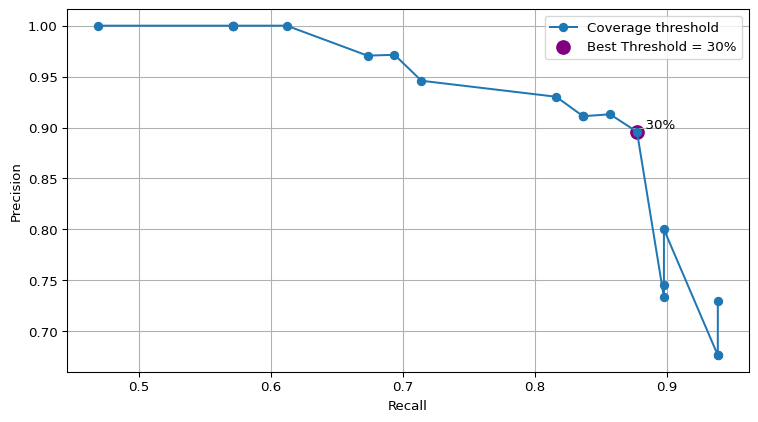

from pathlib import Path
from eris.scan import Scanner
from eris.io import SeqFile
from collapse import collapseis
# scan IS in the contigs
p = Path('../../data/ecoli/assembly-simulated/shovill-outputs/contigs.gfa')
with Scanner() as scanner:
eris_result = list(scanner.scan(p))
gfa_eris = eris_result[0]Week 13: Improve the poster and start writing the report
Daily Log
20-10-2025
- Weekly project meeting
- I sent my poster draft to Leah and Tom
- I will receive the comment in the next one or two days
- Add figure for the thresholding
- I will submit the poster to UQ printing by Thrusday this week
- Dimas will have practice talk in the next weekly meeting
Make dictionary to map is name with fearure id and contig name to the coresponding coverage
from collections import defaultdict
coverage_is = defaultdict(dict)
with open("eris-outputs/eris_gfa_shovill_sim.tsv") as results:
results.readline()
for res in results.readlines():
res = res.split("\t")
if res[2] == "mobile_element":
feature_id = res[1]
is_name = res[15]
contig = res[3]
cov = res[14]
as_key = is_name, contig, feature_id
coverage_is[as_key] = cov
print(len(coverage_is))90So the record number is the same
# load the genome graph
graph_assembly = SeqFile("../../data/ecoli/assembly-simulated/shovill-outputs/contigs.gfa")
graph_assembly.close()
is_eris = collapseis(gfa_eris, graph_assembly)Looks like the IS contigs graph is circular
Looks like the IS contigs graph is circular
Looks like the IS contigs graph is circular
Looks like the IS contigs graph is circular
Looks like the IS contigs graph is circularSo is_eris stores the information of is name with the corresponding nodes in the graph and also the predicted depth or copy number
is_cov_count = {}
for is_name, (contig_list, count) in is_eris.items():
total_cov = 0.0
for contig in contig_list:
# search matches in coverage_dict
for (name, contig_pos, contig_id), cov in coverage_is.items():
# check if the is name has multiple nodes, if so.. we can sum the coverge
if name == is_name and contig_pos == contig:
total_cov += float(cov)
is_cov_count[is_name] = total_cov, countthreshold = 50
final_res = defaultdict(int)
for isname, cov_count in is_cov_count.items():
coverage, count = cov_count
if coverage >= threshold:
final_res[isname] = countis_counts_gff = {}
with open("../../data/ecoli/ec958_IS.reannotated.sorted.bed") as output:
rows = output.readlines()
for r in rows:
row = r.split("\t")
is_name = row[3].split("_")[0]
if is_name not in is_counts_gff:
is_counts_gff[is_name] = 1
else:
is_counts_gff[is_name] += 1from collections import defaultdict
def calculate_is_metrics(truth_is_copies: dict[str, int],
predicted_is_copies: dict[str, int]) -> tuple[dict, list]:
"""
Calculate assessment metrics based on identified IS names and their copies
against the truth annotation
"""
# Combine all unique IS name keys
all_is_names = set(truth_is_copies.keys()) | set(predicted_is_copies.keys())
# Initialize total counts
TP_total = 0
FP_total = 0
FN_total = 0
# Data structure for figure generation (per IS name results)
results = defaultdict(lambda: {'Truth': 0, 'Predicted': 0, 'TP': 0, 'FP': 0, 'FN': 0, 'Difference': 0})
# Calculate TP, FP, FN for each IS name
# This calculation doesn't consider the location in the genome
for is_name in sorted(all_is_names):
# If IS name doesn't appear in the truth, give it 0 count
T_c = truth_is_copies.get(is_name, 0)
# If IS name doesn't appear in the prediction, give it 0 count
P_c = predicted_is_copies.get(is_name, 0)
# True Positives (TP): minimum of True and Predicted counts
TP_i = min(T_c, P_c)
# False Positives (FP): overcall
FP_i = max(0, P_c - T_c)
# False Negatives (FN): undercall/missed
FN_i = max(0, T_c - P_c)
# Accumulate totals
TP_total += TP_i
FP_total += FP_i
FN_total += FN_i
# Store per name results
results[is_name]['Truth'] = T_c
results[is_name]['Predicted'] = P_c
results[is_name]['TP'] = TP_i
results[is_name]['FP'] = FP_i
results[is_name]['FN'] = FN_i
results[is_name]['Difference'] = P_c - T_c
return results, [TP_total, FP_total, FN_total]Let’s try to make ROC curve
def assess_threshold(truth_is_copies: dict[str, int],
predicted_is_copies: dict[float, int],
threshold: float):
after_filtering = defaultdict(int)
for isname, cov_count in predicted_is_copies.items():
coverage, count = cov_count
if coverage >= threshold:
after_filtering[isname] = count
return calculate_is_metrics(truth_is_copies, after_filtering)threshold_values = range(0, 105, 5)
results = []
for th in threshold_values:
result_all, (TP, FP, FN) = assess_threshold(is_counts_gff, is_cov_count, th)
precision = TP / (TP + FP) if (TP + FP) > 0 else 0
recall = TP / (TP + FN) if (TP + FN) > 0 else 0
f1 = (2 * precision * recall) / (precision + recall) if (precision + recall) > 0 else 0
results.append((th, precision, recall, f1))
# Print all thresholds with metrics
print("Threshold | Precision | Recall | F1-Score")
for th, p, r, f1 in results:
print(f"{th:<9} | {p:.2f} | {r:.2f} | {f1:.2f}")Threshold | Precision | Recall | F1-Score
0 | 0.68 | 0.94 | 0.79
5 | 0.68 | 0.94 | 0.79
10 | 0.73 | 0.94 | 0.82
15 | 0.73 | 0.90 | 0.81
20 | 0.75 | 0.90 | 0.81
25 | 0.80 | 0.90 | 0.85
30 | 0.90 | 0.88 | 0.89
35 | 0.91 | 0.86 | 0.88
40 | 0.91 | 0.84 | 0.87
45 | 0.91 | 0.84 | 0.87
50 | 0.91 | 0.84 | 0.87
55 | 0.93 | 0.82 | 0.87
60 | 0.95 | 0.71 | 0.81
65 | 0.97 | 0.69 | 0.81
70 | 0.97 | 0.67 | 0.80
75 | 1.00 | 0.61 | 0.76
80 | 1.00 | 0.57 | 0.73
85 | 1.00 | 0.57 | 0.73
90 | 1.00 | 0.57 | 0.73
95 | 1.00 | 0.57 | 0.73
100 | 1.00 | 0.47 | 0.64import matplotlib.pyplot as plt
# Find best threshold by F1
best = max(results, key=lambda x: x[3])
best_th, best_p, best_r, best_f1 = best
print(f"\nBest threshold by F1 score: {best_th}%")
print(f"Precision={best_p:.2f}, Recall={best_r:.2f}, F1={best_f1:.2f}")
# Extract and sort for PR curve
recall_vals = [r for (_, _, r, _) in results]
precision_vals = [p for (_, p, _, _) in results]
thresholds = [th for (th, _, _, _) in results]
# Sort by recall to draw the curve nicely
sorted_data = sorted(zip(recall_vals, precision_vals, thresholds))
recall_sorted, precision_sorted, thresholds_sorted = zip(*sorted_data)
# Plot Precision-Recall Curve
plt.figure(figsize=(8, 4.5))
plt.plot(recall_sorted, precision_sorted, marker='o', label="Coverage threshold")
# Highlight the best threshold
best_index = thresholds_sorted.index(best_th)
best_r = recall_sorted[best_index]
best_p = precision_sorted[best_index]
plt.scatter(best_r, best_p, color="purple", s=100, label=f"Best Threshold = {best_th}%")
plt.text(best_r, best_p, f" {best_th}%", fontsize=10, verticalalignment='bottom')
# Labels and formatting
plt.xlabel("Recall")
plt.ylabel("Precision")
# plt.title("\n")
plt.grid(True)
plt.legend()
plt.tight_layout() # ensures labels and titles fit inside the image
plt.savefig("pictures/precision_recall_curve.png", dpi=600, bbox_inches="tight")
plt.show()
Best threshold by F1 score: 30%
Precision=0.90, Recall=0.88, F1=0.89